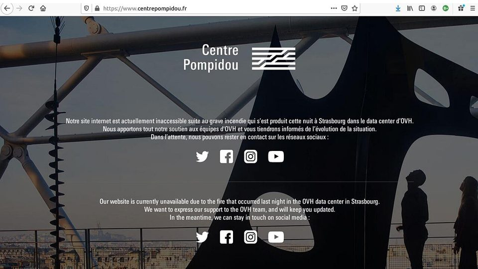
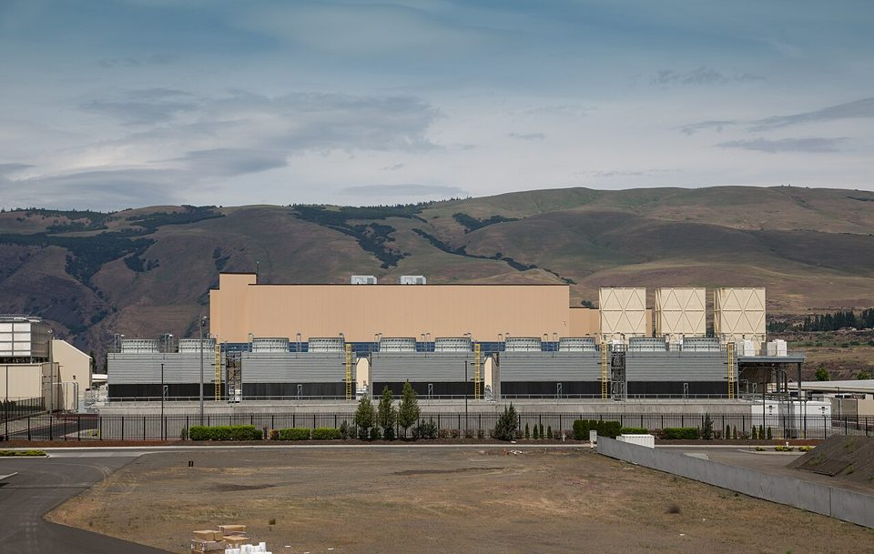

Chapter 13 · The Cloud
The Cloud: Why Netflix Runs on Its Rival's Computers
In August 2008 a database corruption stopped Netflix shipping DVDs for three days, and the company drew a radical conclusion: stop owning computers. Seven years later it shut its last data center and ran one of the world's largest services on machines rented from its fiercest competitor. This chapter is about the foundation almost every business now runs on, and about what it means to build a company on something you do not own.
Wanna go analog?or save it as a PDF; the navigation drops out
Almost every system in this book runs on rented computers in somebody else's building. This chapter treats that as what it has become, a foundation like electricity, and asks the manager's question about it: not whether to depend on the cloud, but how to depend on it wisely.
By the end of this chapter you should be able to:
- Explain what the cloud is, and why it now works like a utility for business.
- Distinguish IaaS, PaaS, and SaaS by what you still manage, and explain capex to opex and elasticity.
- Explain what renting does not move: ownership of the data, responsibility for it, and accountability.
- Describe concentration risk, vendor lock-in, and what a service-level agreement actually promises.
- Explain why Netflix rented nearly everything from a competitor and built the one piece it did not.
- Describe what data centers cost the communities around them, and who decides how that is paid.
1The foundation everything else runs on
This is the last chapter, and it returns to the first component. Chapter 1 listed hardware first and then spent twelve chapters on the other four, because hardware was the part you could point at. You will not be asked to set up a server in your career. You will be asked to approve the decision to rent one, and to answer for what happens next. This chapter is about that decision.
1.1 What the cloud is
Strip the marketing from the word. Cloud computing is other people's data centers, rented over the internet and paid for as you use them. A data center is a building full of computers, with the power, cooling, and security to keep them running day and night. "The cloud" is thousands of those buildings, run by a few very large companies, and rented out to everyone else.
Read it with the five components in view, because the cloud moves exactly one of them. The hardware becomes somebody else's. The data is still yours, and so is every obligation attached to it. The software you choose and the networks that reach it matter more, not less, because everything now travels over the internet. And the people making the decisions have not moved at all, which is why a chapter about renting computers is mostly a chapter about management.
1.2 How we got here: forty years of layers
The cloud did not arrive alone. It is one layer in a stack that took about forty years to build, and each layer made the next one possible.
In the 1980s, personal computers and spreadsheets reached office desks, and businesses began keeping their records digitally. In the 1990s computers reached homes, and the World Wide Web gave them somewhere to go. About 8 percent of U.S. households had a computer in 1984, and 51 percent did by 2000.1 In the 2000s the connection got fast, and then it got portable. Home broadband went from about 1 percent of U.S. adults in 2000 to roughly 60 percent by 2010,2 and the iPhone in 2007 put the internet in a pocket.
Then the layers this course has been about arrived quickly. Amazon began renting computing by the hour in 2006, but for years large companies treated it as a tool for startups, not for anything sensitive. A turning point came in 2013, when the most security-conscious customer imaginable, the CIA, decided to rent its computing too. Mini-case 2 tells that story. Through the rest of the 2010s, the cloud became the default. Storing data became so cheap that companies stopped deciding what to keep and kept everything, which created the need for the analytics and database tools in Chapters 6 and 7. By the late 2010s, machine learning was at work in the background, choosing your feed, flagging card fraud, and ranking search results, mostly without anyone calling it AI. In November 2022 ChatGPT made AI something people talk to, and agents that take actions on their own followed from 2024.
Each layer rests on the ones below it, and that is the sense in which the foundation for modern business has been laid. A manager in 2026 does not need to build any of these layers. But a manager who does not understand them cannot make the decisions that sit on top of them: what to rent, what data to keep, what to automate, and what to trust. Understanding the technology and the data is no longer a specialist's job. It has become part of the job of managing a business, which is the argument of this whole course, and this chapter is where the layers meet.
1.3 Computing as a utility
A century ago, many factories made their own electricity. Each one had a generator in the basement and people on staff to run it. When the electric grid arrived, buying power from a utility became cheaper and more reliable than making it, and within a few decades almost nobody made their own. In 2008 the writer Nicholas Carr, whose argument about IT you met in Chapter 3, predicted that computing would go the same way.3 It has.
A utility is a service so basic that a business assumes it, like electricity, water, or a phone line. You plug in, you pay for what you use, and you need no expertise to benefit. That is what the cloud has become. A company opening today does not ask whether to use it any more than it asks whether to connect to the power grid. It asks how much, for what, and from whom.
The comparison carries a warning as well as a promise. Everybody on the same grid loses power in the same blackout. When computing became a utility, its outages became shared too, and section 2 is about what that means for a business that depends on it. A utility is something you stop thinking about. That is the benefit, and it is also the risk.
Notice where the comparison breaks, because that is where the management starts. Electricity is the same no matter who makes it, so a business can change power suppliers and nothing in the building notices. Computing is not like that. Your data lives inside the provider's systems, your software is built around its tools, and moving both takes months. A power company sells you something that passes through. A cloud provider holds something that stays: your records, your history, your customers. That is why the rest of this chapter keeps asking about ownership, exit costs, and backups, questions nobody asks about the electric company.
1.4 You have been studying cloud systems all quarter
Look back through the book and the foundation is everywhere. Every SaaS product in Chapter 11, from Canvas to Gmail, runs in somebody else's data center. Chapter 12 explained that most companies rent their AI models, which run on rented computers too, and that TikTok's American version is being retrained inside Oracle's cloud. The software that renders this page reached you from a computer you will never see. Netflix, the main case, runs everything before you press Play on Amazon's computers.
None of those chapters needed to say so, because the cloud had become the floor the other systems stood on. That is what a foundation is. You notice it when it cracks.
1.5 What the foundation made possible
Before the cloud, starting a company that needed serious computing meant buying servers before you had customers. Now a student with a laptop can rent the same computers a bank uses, by the hour, and stop paying the day the idea fails. A small shop can run its register, its website, and its inventory on subscriptions, with no server in the back room. A company can launch in a new country without building anything there, as Netflix did in more than 130 countries in a single day in 2016. And any business can rent AI by the request, which is why Chapter 12's tools reached small firms as fast as large ones.
The scale of the shift shows in the spending. Businesses spent about $168 billion on cloud infrastructure in the third quarter of 2026 alone, 55 percent more than a year earlier, with AI the main reason for the growth.4 That is the electricity bill of the modern economy.
1.6 The three service layers: IaaS, PaaS, and SaaS
The cloud is sold in three service layers, and the difference between them is how much you still manage yourself. An apartment makes a good comparison.
- Infrastructure as a service (IaaS) is like renting an empty apartment. The provider supplies the building, the computers, and the connections, and your team installs and looks after all the software. In business: Netflix rents raw computing from Amazon Web Services this way and runs its own software on top of it.
- Platform as a service (PaaS) is like a furnished apartment. The provider also runs the standard tools, such as databases, so your team only builds and runs its own application. In business: a startup builds its ordering app on Google Cloud or Microsoft Azure and lets the provider run the database underneath it.
- Software as a service (SaaS), from Chapter 11, is like a hotel room. Everything is provided and maintained, and you just use it. In business: a sales team keeps its customer records in Salesforce, and a shop sells online through Shopify, without anyone at either company touching a server.
The money changes shape too. Owning computers is capital expenditure (capex): a large purchase made years ahead of need, which sits on the balance sheet and loses value. Renting them is operating expenditure (opex): a monthly bill for what you used. For a finance department that is a real change. It frees cash that would have been locked up in equipment, and it turns a once-a-decade decision into a bill somebody has to watch every month.
Five things a company might rent. Say which layer each one is, empty apartment, furnished apartment, or hotel room, before you check.
Ask what you still manage. If your team installs and updates the software on the machine, it is infrastructure. If your team only builds its own application, it is a platform. If you just log in and use it, it is software as a service.
1.7 Paying only for the peak
Demand for computing is never flat. A retailer's website is quiet on a Tuesday in February and overwhelmed on the day after Thanksgiving. A tax service does most of its year's business in a few weeks of spring. A company that owns its computers has to buy enough for its busiest day, and then pays for that capacity all year while most of it sits idle.
Elasticity is the cloud's answer: capacity that grows within minutes when demand rises and, just as important, shrinks when it falls, so you pay for the peak only while the peak lasts. For a business with spiky or unpredictable demand, that one property is often the whole case for renting. It is the electricity comparison again: you do not own a power plant sized for the hottest day of the year. You pay the meter for what you used, and the utility worries about the peak.
2Depending on a foundation you don't own
Section 1 was the promise. This section is the fine print. A business that rents its foundation still owns its data, still answers for it, and now depends on a supplier it cannot easily replace. None of that is a reason to avoid the cloud. All of it is a reason to manage the relationship the way you would manage any supplier your business cannot run without.
2.1 Your data, their building
Renting the computers does not transfer ownership of the data on them. Your customer records, your sales history, and your employees' files are still yours, legally and ethically, wherever they sit. Data ownership in the cloud means you keep the rights and the responsibilities, while somebody else runs the machines.
The providers say this themselves. Amazon calls it the shared responsibility model: Amazon is responsible for security of the cloud, meaning its buildings, machines, and networks. The customer is responsible for security in the cloud, meaning its own data, who can see it, and how its systems are set up.5 If an employee leaves a customer file open to the whole internet, that is not Amazon's breach. It is yours.
So before signing, a manager asks four questions about the data. Can we get all of it back, in a form we can use somewhere else? Where, physically, will it be stored? That matters because the law that protects it depends on the place; personal data about people in Europe, for example, carries European rules wherever it is processed. Who at the provider can see it, and when? And what happens to it if the provider suspends our account, raises the price beyond what we can pay, or goes out of business?
2.2 One landlord's bad morning
A few companies run most of the world's rented computing. In the third quarter of 2026, Amazon held about 26 percent of the market, Microsoft about 19 percent, and Google about 16 percent, so roughly three of every five dollars went to just three providers.4 Chapter 9 called this concentration risk, when too much depends on one supplier, and the cloud has the same shape.
It showed what that means in October 2025. A fault inside one of Amazon's own database services in its largest region, in Northern Virginia, spread through its systems for most of a day. Thousands of services failed at once: social apps, games, banks, airlines, and smart-home devices, run by companies whose customers had never heard of Amazon Web Services until the morning it mattered.6 Nothing was hacked. One landlord had a bad morning, and a noticeable slice of the internet had it too. That is the utility's blackout from section 1.3, arriving on schedule.
2.3 Easy to move in, expensive to leave
Vendor lock-in is what happens when leaving a supplier costs so much that you stay even when you would rather not. It is Chapter 3's switching costs, built into a contract. Cloud lock-in has three layers. The first is exit fees: providers have long charged for data leaving their systems, called egress fees, while data arriving is free. The second is the provider's own tools. Every service only one provider sells becomes something you have to rebuild before you can go. The third is simply accumulation. Data piles up where it started, and other systems get built around it, so the first choice of provider tends to be the last.
The first layer is now shrinking, partly by law. In 2024 Google, then Amazon and Microsoft, began waiving data fees for customers who move all their data out to leave; Amazon said the change followed the direction set by the European Union's Data Act.7 That law, in force since September 2025, caps what a provider may charge a customer for switching, and from 12 January 2027 bans switching charges, including those fees, for customers in the EU.8 The other two layers remain. Making the door free does not make the move easy, so the manager's job is to plan the exit on the day of the entry.
2.4 What the contract actually promises
Every cloud contract includes a service-level agreement (SLA), the provider's written promise about how reliably the service will run. It is usually stated as a percentage of time the service will be up, and the decimal places matter more than they look. Translate them into hours and they become a business question.
| Promised uptime | Downtime allowed in a year | In plain terms |
|---|---|---|
| 99% | About 3.7 days | A long weekend, at a time you do not choose |
| 99.9% | About 8.8 hours | One full working day |
| 99.99% | About 53 minutes | A long lunch break |
Read two more lines in any SLA. First, what you get when the promise is broken. It is usually a credit toward your next bill, often a share of that month's charges, and not compensation for the sales you lost while you were down. Second, what the promise covers. A provider can meet its SLA perfectly while your own system is down, if the fault is in a part of the system that is yours. The SLA is the provider's promise, not your business plan.
2.5 Insurance you buy in advance
The protection against one landlord's bad morning is to not keep everything in one place. Large providers sell computing by region, a cluster of data centers in one area, and divide each region into separate buildings with their own power and cooling. A business can keep copies of its systems and data in more than one building, more than one region, or even with more than one provider. Each step protects against a bigger failure, and each step costs more every month, for capacity you hope never to use. A hospital keeps a backup generator for the same reason: not because the grid usually fails, but because the hour it does is the hour that matters most.
That makes resilience what it has been all course: a business decision about how much insurance to buy, made before the morning it is needed. Chapter 9's business continuity plan is where the decision gets written down. Some systems can wait a day. Some cannot be down for an hour. Deciding which is which, and paying for the difference, is a manager's job, and the third mini-case below shows what happened to customers who never made the decision at all.
3Three answers to where the computers are
Before the main case, here are three short ones, in the order they happened. Each is a different answer to the same question, which is the question underneath this whole chapter: where are the computers, and whose problem is that? The first answer was that the customer no longer needs to know. The second was that they can be trusted with even the most sensitive data, if the buyer stays in charge. The third was that they are in a building, and buildings burn.
3.1 Mini-case 1 · 1999: the software you did not have to install
In 1999 business software arrived in a box, or on a truck. A company bought it, installed it on its own servers, paid consultants to make it work, and paid again for every upgrade. Chapter 8 is a chapter about what that cost.
Salesforce started that year with a different proposal: the customer-management software would run on Salesforce's computers, customers would reach it through a web browser, and they would pay a subscription. No servers to buy, no installation, no upgrade projects. The company's marketing showed the word "software" with a line through it, and the industry it was entering thought this was ridiculous.9 Businesses would never put their customer records on somebody else's machines.
Customers did trust it, and the model has a name now, software as a service, that Chapter 11 already gave you. The point of putting it here is the date. The decision to rent rather than own was being made, and winning, seven years before Amazon rented its first virtual machine to anybody. The cloud is usually told as a hardware story. It began as a decision about who should carry the burden of running software, and the answer was: not the customer.
The answer it gave: the customer stops needing to know where the computers are. The component: software. Notice what did not move. The customer still owned the data and still owned every decision about it, which is the point section 2.1 makes about what renting does and does not transfer.
Show the answer
Control over timing and change, mostly. When the software runs on the vendor's servers, the vendor decides when it updates, when it is down for maintenance, what the new version looks like, and whether a feature the company depends on survives. The company also gives up the ability to run it if the vendor fails, and the ability to keep its data anywhere the vendor has not agreed to. Whether that matters depends on the software: nobody minds Salesforce choosing when to update a contact list. Whether you would accept the same terms for the system that runs your factory floor is the question Chapter 11's build-or-rent rule is for.
Photograph: Sharon Hahn Darlin, 2022, via Wikimedia Commons, CC BY 2.0.
3.2 Mini-case 2 · 2013: the customer that made the cloud safe to buy
By 2013 Amazon had been renting computing for seven years, and many large organizations still kept it at arm's length. Startups used it. Banks, hospitals, and governments mostly did not, because putting sensitive data on somebody else's machines felt like a risk nobody wanted to be blamed for.
Then the Central Intelligence Agency went shopping. It wanted cloud computing for itself and other intelligence agencies, and in early 2013 it awarded Amazon Web Services a contract worth up to $600 million over four years. IBM, which had bid a lower price, protested. A government review sided with IBM on how prices had been compared, and the CIA reopened the competition. Amazon went to court, and in October 2013 a federal judge restored its contract.10 In his written opinion the judge concluded that Amazon's offer was superior and that the competition was not close.10
Every other cautious buyer noticed. The organization with the most to lose from a leak had decided that renting was safe enough, and had paid more for the better service rather than less for the cheaper one. If rented computing was secure enough for the intelligence community, it became hard for a bank or a hospital to call it too risky.
Nobody can prove the CIA's decision caused what came next, but what came next is well documented. Large, regulated companies began moving their core systems to the cloud. Capital One, the credit card company and bank, announced in 2015 that it would move its critical applications to Amazon and leave its own data centers. In 2020 it became the first U.S. bank to report that it had closed all of them.11 Along the way it also showed the other half of the bargain. In 2019 an attacker took data on about 106 million of its customers by exploiting a firewall Capital One itself had set up wrong on its rented servers.12 Amazon's buildings were never breached. That is the shared responsibility model from section 2.1: the provider secures the cloud, and the customer secures what it puts in it.
The story has a second chapter. In 2020 the CIA replaced its single-provider contract with a new one shared among five: Amazon, Microsoft, Google, Oracle, and IBM, over fifteen years, in a deal reported to be worth tens of billions of dollars.13 Having trusted one landlord, the agency chose not to depend on just one. That is section 2.2's concentration risk and section 2.3's lock-in, managed by a customer large enough to make the providers compete.
The answer it gave: the computers can be trusted with sensitive data, if the buyer stays in charge. The component: data. The CIA rented the machines. It did not hand over responsibility for what was on them, which is the shared responsibility model from section 2.1 in its most serious form.
Show the answer
The price on the bid is only part of the cost. Total cost of ownership adds what it takes to make a system work and keep it working. That includes how capable and proven the service is, how much the agency's own staff would have to build around it, and what a failure or a breach would cost. For an intelligence agency, the cost of the second-best security dwarfs the difference between two bids, so paying more for the stronger offer can be the cheaper decision over the life of the system. The 2020 decision is the other half of the lesson. After years of depending on one provider, the agency had the scale to avoid concentration risk and lock-in by making five providers compete for its work. Most businesses are too small to do that, which is why section 2 asks them to plan their exit and their backups instead.
3.3 Mini-case 3 · 2021: the cloud that caught fire
In the early hours of 10 March 2021, a fire started in a data center in Strasbourg belonging to OVHcloud, one of Europe's largest hosting providers. One building was destroyed and a neighboring one damaged. The company shut down the whole site. Millions of websites went offline, including government services, news outlets and a large number of small businesses that had never thought about where their website physically was.14

Screenshot: Fraguando, 2021, via Wikimedia Commons, CC BY-SA 4.0.
Most of those customers came back within days. Some did not come back at all. A number of customers had chosen the cheapest hosting option, which did not include backups, or kept their backups in the same building on the assumption that a building is a safe place. Their data was gone. The company's founder publicly urged customers to switch on their disaster recovery plans, and customers who had assumed the cloud itself was the backup learned the difference the expensive way.14
This chapter has been calling the cloud other people's data centers. This is what that sentence means when the metaphor is stripped off. It is a warehouse full of machines, with power, cooling, and a fire suppression system that on one night in 2021 was not enough.
The answer it gave: the computers are in a building, and buildings burn. The component: hardware. Renting the hardware from a professional does not exempt you from the physical world. It means you have outsourced your exposure to it, along with your ability to see it.
Show the answer
Whichever option Cascadia picks, its data sits on a disk in a building somewhere. For a small co-op, renting is usually safer than owning, because Amazon, Microsoft, and Google keep copies in more than one building and Cascadia never would. The lesson of Strasbourg is not that the cloud is dangerous. It is that a customer has to ask where the copies are, because OVH's customers who had paid for backups in the same building lost everything. Three questions to put to any provider: how many physical locations hold a copy of our data, how far apart are they, and are backups included in the price we are paying or sold separately? The cheapest provider would rather you skipped the third. If the answer to the first is one, you are back in the building.
3.4 What the three have in common
A subscription, a contract, and a fire. In none of the three did the technology fail in a way that was hard to understand once it had happened. What each one changed was what people understood they were buying.
In 1999 they were buying freedom from running software. In 2013 they learned they could trust it with almost anything. By 2021 they found out that the building the metaphor concealed could burn down with their business inside it. The cloud did not get worse across those years. It got clearer, and every one of those clarifications was a bill.
Read the main case with that in mind. Netflix understood both early, and made a decision that still surprises people: it rented nearly everything, including from a competitor, and built the one piece a fire could not be allowed to touch.
4Main case · Netflix: seven years to zero data centers
Press Play on Netflix tonight and two different companies' computers do the work. Everything before the video starts, from signing in to search to the row of recommendations, runs on computers Netflix rents from Amazon, a company that competes with it for your evenings. The video itself comes from a box Netflix owns, probably sitting inside your internet provider's building. How a DVD-by-mail company ended up with that arrangement, and why it is a strategy rather than an accident, is the case.
4.1 The three days that started it
Before the outage, Netflix had already tried being its own landlord. It built two data centers, side by side, and kept running out of room. Streaming had launched in 2007 and its demand was spiky in a way DVD shipping never was, so the company would finish a build, fill it, and start the next one. The lesson it drew afterward is the one worth teaching: Netflix was not good at building data centers, and it had no particular reason to become good at it.
Then August 2008 supplied the argument that no capacity plan could. A database corruption stopped DVD shipments for three days. Read what the company took from that, because it is not "our database broke." Members with DVDs at home could still watch them during those three days. If the same thing happened to streaming, viewing would simply stop for everyone at once. The failure was small and the implication was not, and the implication is what moved the decision.
Photograph: BlueMint, 2006, via Wikimedia Commons, CC BY 2.5.
The diagnosis named a shape rather than a product. Netflix decided it had to stop depending on a few large machines in a building it owned, any one of which could stop the whole business, and spread the work across many machines that it did not own. Notice that this is a design decision first and a purchasing decision second. The cloud was how Netflix executed it, not why it was needed.
4.2 Renting from the competitor
Netflix chose Amazon Web Services, and you should sit up at that sentence rather than read past it. Amazon sells video. Prime Video competes for the same evenings and the same subscriptions. Netflix decided to run its entire business on computers owned and operated by a rival, and has done so for more than fifteen years.
Photograph: Vahurzpu, 2020, via Wikimedia Commons, CC BY-SA 4.0.
That decision only makes sense if you apply Chapter 11's build-or-rent rule carefully. Rent what is a commodity, build what differentiates you. Computing capacity was becoming a commodity, sold by the hour, available to Netflix and to everyone else on the same terms. Owning racks of it was never going to be the reason somebody subscribed. So Netflix rented the commodity from whoever ran it best, put the saved attention into the product, and accepted the strategic discomfort that came with the invoice.
Accepting it is not the same as ignoring it. The risk in that arrangement is real: a supplier who is also a competitor sets your prices, sees your capacity patterns, and can change terms. Netflix manages that risk the way every company should manage a dependency it cannot remove, by keeping the part that matters most out of the arrangement entirely. Section 4.6 is that part. Before you get there, notice that the company made the uncomfortable choice deliberately, in public, and could explain it. A dependency you have chosen and can justify is a strategy. The same dependency arrived at by drift is an exposure.
It is also a data-ownership decision. Netflix's member records and viewing history, the raw material its recommendations learn from, sit on Amazon's machines. Under the shared responsibility model from section 2.1, Netflix owns that data and answers for it, and Amazon runs the computers underneath. That arrangement can be safe between rivals, but only if the owner has decided who can see the data and what it would take to leave.
4.3 Seven years to zero data centers
The migration took seven years, finishing in early January 2016 when Netflix shut down the last data-center pieces serving its streaming product. The company is candid about why it took so long: the easy path was to move its existing systems into AWS unchanged, and Netflix refused it, because that moves your problems along with your servers. Instead it rebuilt nearly everything to run across many rented machines and to keep working when some of them failed. The payoff figures come from Netflix's own announcement: eight times the streaming members it had in 2008, overall viewing up a thousandfold, and elasticity that let engineers add thousands of rented servers and enormous amounts of storage in minutes. The proof-of-concept moment came the same month the migration ended: on January 6, 2016, Netflix switched on service in more than 130 additional countries at once, a launch its own racks could never have absorbed.15
4.4 What streaming recorded: data becomes the product
Moving to streaming changed more than where the computers were. It changed what Netflix knew. A DVD in an envelope told the company very little: which disc went out, and when it came back. A stream tells it almost everything. It records what you started, where you paused, where you gave up, what you watched next, on which device, and at what time of night. Rented computers that could store and analyze all of that, for every member, turned Netflix into a company that knows its audience minute by minute.
The first use was recommendations, the collaborative filtering from Chapter 12. In 2015 two Netflix executives wrote in ACM Transactions on Management Information Systems, a journal in this book’s own field, that recommendations influence about 80 percent of the hours streamed on Netflix; the rest come from search.16 They also estimated that personalization saves the company more than a billion dollars a year by keeping members who would otherwise cancel. Chapter 12’s warning applies too. What Netflix recommends shapes what people watch, and what they watch becomes the next round of data.
The second use was bigger. In 2013 Netflix began making its own shows instead of only licensing other studios’. For its first major original it committed about $100 million to two full seasons of House of Cards, a political drama, without asking to see a pilot episode first, which is what television networks usually require.17 The company’s confidence came from its viewing records. They showed a large audience for the original British version of the show, for films directed by David Fincher, and for films starring the show’s lead actor. The new series was built where those audiences overlapped, and Netflix even cut different trailers for different kinds of viewers.18
Notice what the data did and did not do. It told Netflix who the audience was before it spent the money. It did not write a single scene. And it raised the stakes of the decision in section 4.2: the most valuable thing Netflix owned was no longer its catalog or its computers, but what it knew about its members, and that knowledge lived on a rival’s machines.
4.5 Assume everything fails
On Christmas Eve 2012, an Amazon maintenance process was run against live systems by mistake and deleted data that one of Amazon's traffic-routing services needed. Parts of that service stopped just after noon Pacific time. Netflix streaming started failing within minutes, first on a few device types, then on games consoles and mobile devices by mid-afternoon. It happened on one of the heaviest viewing nights of the year, and Netflix could not fix it, because the broken part belonged to somebody else.
The useful thing is what Netflix did with that experience, and it is a management practice rather than a technology. The company decided to stop treating failure as an event to be prevented and start treating it as a condition to be survived. Its engineers built tools that deliberately break pieces of its own live production systems, a practice now called chaos engineering. The best-known tool is called Chaos Monkey, which switches off running servers at random during working hours. If a service cannot survive losing a machine at two in the afternoon on a Tuesday, the team finds out on a Tuesday afternoon while everybody is at their desks, instead of on Christmas Eve.19
Chapter 9 gave you the term for the written plan covering the bad day: business continuity. Most organizations write that plan, file it, and discover on the bad day which parts of it were wishes. Netflix automated the rehearsal so the plan could not quietly rot. That is the transferable idea here, and it costs a decision rather than a budget. Somebody has to be willing to let a system break on purpose, on a normal day, in front of everyone, because the alternative is finding out later.
4.6 The part Netflix built anyway
Here is the detail that turns the Netflix case from a cloud advertisement into a strategy lesson. Everything that happens before you press Play, sign-in, search, recommendations, billing, runs on AWS. The video itself does not. Netflix built and owns Open Connect, its own content delivery network (CDN): a set of computers placed close to viewers so the video travels a short distance. Netflix loads boxes with its catalog and installs them inside internet providers around the world, so the stream you watch comes from a Netflix-owned box near you, not across the planet from a rented one. Open Connect carries all of Netflix's video.20
Run Chapter 11's build-or-rent rule over that split and it resolves perfectly. Elastic, spiky, commodity computing: rent it, even from a rival. The predictable, colossal, quality-defining flow of bits that is the customer experience: own it, tune it, and let it become a moat. The lesson is not "use the cloud" or "avoid the cloud." It is that build-versus-rent is decided capability by capability, by the same differentiator test, at every scale from Cascadia's registers to one of the largest video services in the world.
4.7 What it costs, and who does the arithmetic
Netflix has never published what it pays Amazon. Around the time the migration finished, the company said it expected to spend more than $800 million on technology and development in 2016, up from $651 million the year before. That gives the order of magnitude without breaking out the rent. Netflix has also been consistent that cost reduction was not why it moved. It moved for availability and elasticity, and it says it got both.
That is an important qualification, because the cloud was sold to a generation of managers as a way to save money and a large number of them have since done the arithmetic and disagreed. The clearest worked example is 37signals, which runs Basecamp. The company says it spent about $3.2 million on cloud services in 2022, bought roughly $700,000 of its own servers, moved its applications onto them without hiring anyone new, and cut its annual bills by around $2 million.21 In 2025 it went further, buying its own storage so it could close its Amazon account entirely.21 Dropbox made a bigger version of the same move years earlier. Investors have a name for the pattern now, the cloud paradox: the rented infrastructure that makes a young company fast becomes a permanent charge against its margins once its demand is large and predictable.
Hold the two stories next to each other and they do not actually conflict, which is the lesson. Renting wins when demand is spiky, uncertain, or growing faster than you can buy. Owning wins when demand is large, steady and forecastable, because then you are paying a margin for flexibility you no longer use. Netflix's own split says exactly this. It rents the part that spikes and it owns the part that is enormous and predictable. Nothing about that requires you to have an opinion about the cloud in general. It requires you to know which of those two descriptions fits the workload in front of you, and to be willing to redo the sum when it changes.
4.8 The five components at Netflix
Now that you have seen the whole system, here it is as five components, the way this course maps every case, and the last time the book draws this table. Look at how many rows Netflix rents from a competitor, and which one it refused to.
| Component | In the case | The lesson |
|---|---|---|
| Hardware | Rented by the hour from a rival; owned where the stream lives | Hardware became a utility, and the bill became strategy |
| Software | Rebuilt to keep working when rented machines fail | Moving unchanged moves your problems with you |
| Data | Viewing data that picks shows, on a rival’s machines; the catalog inside internet providers | You own the data wherever it sits, and you answer for it |
| Networks | Open Connect, its own delivery boxes inside internet providers | The network is not plumbing when it is the product |
| People | Engineers who break things on purpose; managers who watch the bill | Every rented machine still has humans deciding, and absorbing |
4.9 What's next: what has changed since, and what has not
Netflix now serves a business that did not exist when it started this: hundreds of millions of paid memberships, its own studio output, live events, games and advertising, all on rented computers and its own delivery network. The architecture held while the company became something else, which is the strongest argument anyone has made for the rebuild being worth seven years.
What has not changed is the exposure. Section 2.2 described the October 2025 failure in AWS's largest region and the long list of services that fell over with it. Renting from one landlord still means inheriting that landlord's worst morning. The insurance against it is still the expensive kind: running in more than one region, or with more than one provider, and paying for capacity you hope never to use. Netflix bought that insurance early and kept paying for it. Most companies decide they cannot afford it, which is a legitimate decision and only a decision if somebody actually made it.
Photograph: Theodore Christopher, 2025, via Wikimedia Commons, CC0.
The newest pressure on the arithmetic is the one Chapter 12 costed out. The same providers are now buying computers built for AI on a scale that is reshaping electricity demand, and that shows up in prices, in waiting lists for capacity, and in the politics of where the next building goes. When you approve a system in five years, the question will not be whether to use the cloud. It will be which parts, in whose buildings, powered how, and at what price when the contract renews.
4.10 What a business technology manager takes from this case
Strip the Netflix case down to what you can reuse in any company. Five decisions came up in it, and each one is a decision you will be in the room for.
Rent the commodity, even from a rival. Netflix runs on Amazon's computers while Amazon's Prime Video competes with it, because computing had become something Netflix could rent better than build. Chapter 11's rule, pushed to its limit: if a competitor could buy the same thing tomorrow, it is not your advantage, so pay somebody else to run it.
Build the one piece that touches the customer most. Netflix rents nearly everything and built its own network of delivery boxes inside internet providers, because the moment a stream stutters is the moment a subscriber decides to cancel. The build-or-rent question is answered capability by capability, and the answer is "build" only where being ordinary would cost you customers.
Ask where the copies are. The cloud is other people's data centers, and data centers burn. OVH's customers who paid for backups in the same building lost everything. Before you sign, ask how many buildings hold a copy of your data and how far apart they are, and get the answer in writing.
Plan for the day your provider is down. Renting from one company means that company's bad morning is yours, and an outage that takes out a region takes out everyone in it at once. A manager who has written down what the business does when the cloud is unreachable, even if the answer is "wait," has made a decision. One who has not has made a bet.
Own the data, wherever it lives. Netflix’s most valuable records sit on a rival’s machines, and that is safe only because Netflix decided what it owns, who can see it, and how it would leave. Ask section 2.1’s four questions before the first record moves, not after the contract renews.
5The downside: the cloud's neighbors
Start with what the cloud gave, because it is real. Section 1.5 described companies that could not have existed without it, and Netflix reached more than 130 countries in a day. But the cloud's benefits spread around the world, and its burdens land in a few places, on people who rarely chose them.
A data-center campus arrives with construction jobs and tax revenue. It also arrives with demand that can strain the local power grid and show up in local electricity debates. In dry regions its cooling competes for water with farms and towns. Its backup diesel generators and constant mechanical hum are a neighbor's daily reality. Because the buildings cluster where land and power are cheap, the local numbers get large: data centers use on the order of a fifth of Ireland's electricity and, by commonly cited estimates, a quarter of Virginia's. Communities from Northern Virginia to Ireland to the American Southwest are now negotiating, and sometimes fighting, over where the next campus goes.
In November 2026 that fight reached the ballot box. Voters decided 41 local and state ballot measures about data centers in ten states, and sided against the data centers in all but one.22 Candidates in both parties promised pauses or new limits on construction, most often by tying data centers to rising electric bills.23 Many who made the issue central to their campaigns won, and in one national poll of voters, people opposed building a data center in their own community by roughly three to one.24 Elections turn on many issues at once, and the cost of living was the larger one, so the results do not show that data centers alone decided any race. They do show that where a company puts its computers has become a public question, answered partly by voters who will never be its customers.

Photograph: Tony Webster, 2015, via Wikimedia Commons, CC BY 2.0.
The global picture is in Chapter 12, section 5.5: the International Energy Agency's estimate that the world's data centers used about 1.5 percent of all electricity in 2024, with demand on track to roughly double by 2030 as AI grows.25 This chapter adds the local half of that story. A single stream or prompt costs very little. At scale, computing is an industry, and industries have neighbors.
You have seen this pattern twice before: security costs passed to patients in Chapter 9, and AI's costs passed to applicants and labelers in Chapter 12. Economists call it an externality all three times. Here they are data-center externalities, and the answer is the same all three times: someone has to speak for the people who are not in the room when the decision is made.
5.1 The last word: you are the one in the room
This is the end of the book, so it is worth saying plainly what the thirteen chapters add up to. Every system you studied was hardware, software, data, networks, and people, and in every case the technology was the easy part. Netflix did not win because it found better computers than anyone else; it rented the same computers everyone could rent. It won because people made clear decisions about what to rent, what to build, what to protect, and what to rehearse. The same is true of Domino's, of Every Cure, and of every case in between.
The decisions in this chapter are the same kind. Which systems to rent and from whom. Where the data lives and how you get it back. How much insurance to buy against a bad morning. Whose electricity and water a new building uses. None of these is an engineering question, and all of them will be decided by somebody with a business degree who understands how the systems work. After this course, that can be you. The foundation is rented. The judgment is not, and it is the part of the system that companies cannot buy by the hour.
- The cloud is now a utility: the foundation almost every business runs on. The question is not whether to use it, but how to depend on it wisely.
- Renting the computers moves none of the ownership of, or responsibility for, the data on them. Ask how you would get it back before you put it in.
- A few providers run most of the world's rented computing, so one landlord's bad morning becomes everyone's. Resilience is insurance, bought in advance.
- Lock-in is built from exit fees, provider-only tools, and accumulated data. Law is removing the first; planning the exit on day one handles the rest.
- Build or rent is decided capability by capability. Netflix rented the commodity from its fiercest rival and built the one piece customers would notice.
- At scale, computing is an industry with neighbors. The people who decide where it goes, and who pays, are increasingly people with your degree.
6Vocabulary
- Cloud computing / data center
- Other people's computers, rented over the internet / the buildings those computers live in.
- Utility
- A service so basic a business assumes it, paid for by use; what computing has become.
- IaaS / PaaS / SaaS
- Renting the empty apartment, the furnished apartment, or the hotel room: less to manage, less you can change.
- Capex vs. opex
- Buying capacity years ahead vs. paying monthly for what you use.
- Elasticity
- Capacity that grows and shrinks with demand, so you pay for the peak only while it lasts.
- Data ownership
- Keeping the rights to, and responsibility for, your data wherever it is stored.
- Shared responsibility model
- The provider secures the cloud; the customer secures what it puts in it.
- Concentration risk
- Too much depending on one supplier, so its failure becomes everyone's.
- Vendor lock-in / egress fees
- When leaving costs more than staying / charges for moving data out.
- Service-level agreement (SLA)
- A provider's written promise about reliability, and what you get when it is broken.
- Region
- A cluster of a provider's data centers in one area; where your systems live and can fail together.
- Content delivery network (CDN)
- Computers placed close to viewers so heavy content travels a short distance; Netflix's is Open Connect.
- Chaos engineering
- Breaking your own systems on purpose so failure is planned for before it happens.
- Cloud paradox
- Renting makes a young company fast and becomes a heavy cost once its demand is large and steady.
- Data-center externalities
- Energy, water, noise, and grid strain landing on the neighbors of the buildout.
Quiz yourself on the three service layers until you can place any product you use (your email, your bank's app, a game server) on the right one. Then one last audit in the Lab 1 spirit: ask an AI to estimate the energy cost of an hour of streaming, and check its confident number against Chapter 12, section 5.5, and section 5 of this one. If the quarter worked, you will catch what needs catching.
7Discussion questions
None of these get handed in. On Wednesday you run the discussion and I steer it, which means the class is only as good as what you walk in with. Read the chapter, pick the question you have the strongest opinion about, and be ready to say it first.
- Netflix rents nearly everything from a company that competes with it and owns the one piece that carries the video. Apply Chapter 11's build, buy, or subscribe rule to that split and say whether you would have drawn the line in the same place. Name one capability you would move to the other side. Apply
- On the October 2025 morning, thousands of companies discovered they had a landlord. Explain how the cloud being a utility makes this kind of outage more likely to be shared, and say what a company can realistically do about it without doubling its costs. Analyze
- Cascadia is about to move its member records and sales history to a SaaS provider. Write the four data-ownership questions from section 2.1 for this deal, say which answer would make you refuse to sign, and say which of the five components the co-op is least prepared to own after the move. Systems
- A provider promises 99.9 percent uptime, and its remedy for a broken promise is a credit worth 10 percent of that month's bill. For a business that makes most of its sales online, explain in plain terms what that promise is and is not worth, and what you would do about the gap. Apply
- Data centers cluster where land and power are cheap, and the people who live there did not choose to host a large share of a country's electricity demand. Is it acceptable for the convenience of everyone else to be paid for locally by a few? Argue one side, state the strongest objection to your position, and say what would change your mind. Ethics
8From lecture to lab
This is the last chapter, and the lab is the last of the quarter. Every lab so far handed you a structure somebody else built: Cascadia's spreadsheets, its tables, its dashboards. This one hands you the blank page.
Before anything is rented or built, in the cloud or anywhere else, somebody decides what things are called and where they go. That decision is information architecture, and it is what the lab is about. You will read Abby Covert on making sense of a mess, find an information architecture in the world and judge it, and sketch a model of your own. Chapter 7 already told you why it matters: the shape you store facts in decides which questions are cheap to answer. (Also: is a hotdog a sandwich? Lab has an answer.)
9Sources and further reading
- 1 U.S. Census Bureau, Home Computers and Internet Use in the United States: August 2000 (P23-207, 2001), for households with a computer rising from 8.2 percent in 1984 to 51 percent in 2000. Section 1.2.
- 2 Pew Research Center, “Internet, Broadband Fact Sheet”, for home broadband among U.S. adults at about 1 percent in 2000 and around 60 percent by 2010. Section 1.2.
- 3 Nicholas Carr, The Big Switch: Rewiring the World, from Edison to Google (W. W. Norton, 2008), for the comparison between factories’ own generators and computing as a utility; and his earlier “IT Doesn’t Matter,” Harvard Business Review, May 2003, cited in Chapter 3. Section 1.3.
- 4 Synergy Research Group, as reported by DatacenterDynamics, Q3 2026, for about $168 billion of enterprise cloud infrastructure spending in the quarter, 55 percent year-on-year growth driven by AI, and shares of about 26, 19, and 16 percent for Amazon, Microsoft, and Google. Shares move every quarter; recheck. Sections 1.5 and 2.2.
- 5 Amazon Web Services, “Shared Responsibility Model”, for security “of” the cloud versus security “in” the cloud, and for the customer’s responsibility for its own data and access. Section 2.1.
- 6 Amazon Web Services, “Summary of the Amazon DynamoDB Service Disruption in Northern Virginia (US-EAST-1) Region”, post-event summary of the 19 and 20 October 2025 disruption in the US-East-1 (Northern Virginia) region, and contemporary reporting, for the fault in Amazon’s database service and the day of cascading outages. Section 2.2.
- 7 Amazon Web Services, “Free data transfer out to internet when moving out of AWS,” 5 March 2024, for the waiver and its stated link to the EU Data Act; and Data Center Knowledge, 6 March 2024, for Google’s January 2024 move first. Microsoft followed in March 2024. Section 2.3.
- 8 Pinsent Masons, “Switching and porting rules under the EU Data Act”, for the cap on switching charges until 12 January 2027 and the general ban, including egress fees, from that date; the Act has applied since 12 September 2025. The ban covers switching, not ordinary ongoing data charges. Section 2.3.
- 9 Accounts of Salesforce’s founding in 1999 and its “no software” positioning. Marc Benioff’s Behind the Cloud (2009) is the insider version and should be read as one. Mini-case 1.
- 10 Washington Technology, “Amazon win restarts CIA cloud contract,” October 2013, for the CIA’s commercial cloud contract with AWS, worth up to $600 million over four years, IBM’s protest, and the Court of Federal Claims ruling restoring the award; and The Register, 8 November 2013, for the judge’s written opinion that AWS’s offer was superior. The reading of the deal as a turning point for enterprise trust in the cloud is the book’s, and a common one. Section 1.2 and mini-case 2.
- 11 Amazon Web Services, “Ten Memorable Customer Moments from 10 Years of AWS re:Invent”, for Capital One’s 2015 announcement and its November 2020 report that it had become the first U.S. bank to exit its legacy data centers. This is Amazon describing its own customer. Mini-case 2.
- 12 SiliconANGLE, 1 December 2020, for the closing of Capital One’s data centers after an eight-year process and the 2019 breach affecting about 106 million customers; and CloudZero for the breach occurring through a misconfigured web application firewall hosted on AWS. The breach is also covered in the public record of the criminal case and the regulators’ actions; check those before teaching it in depth. Mini-case 2.
- 13 Nextgov, “CIA Awards Secret Multibillion-Dollar Cloud Contract,” November 2020, and Washington Technology, November 2020, for the Commercial Cloud Enterprise contract awarded to Amazon, Microsoft, Google, Oracle, and IBM, its fifteen-year term, and its reported value of tens of billions of dollars (the CIA did not disclose a ceiling). Mini-case 2.
- 14 Netcraft, “3.6 million websites taken offline after fire at OVH datacenters” (March 2021), and Reuters, via iTnews, 11 March 2021, for the scale of the outage and the company’s statements, including the founder’s advice to customers to activate their disaster recovery plans. Mini-case 3.
- 15 Netflix, “Completing the Netflix Cloud Migration” (February 2016): the 2008 database corruption, the seven-year timeline, the cloud-native rebuild, the growth figures, and the January 2016 launch in 130 more countries. Around the same time the company said it expected to spend over $800 million on technology and development in 2016, against $651 million in 2015; it has never published what it pays Amazon (reported in Ars Technica, 11 February 2016). Sections 4.1 to 4.3 and 4.6.
- 16 Carlos A. Gomez-Uribe and Neil Hunt, “The Netflix Recommender System: Algorithms, Business Value, and Innovation,” ACM Transactions on Management Information Systems 6(4), December 2015, for recommendations influencing about 80 percent of hours streamed and the estimated value of personalization. The authors were Netflix executives describing their own system. Section 4.4.
- 17 NPR, “Netflix Moves Back Into Content Production With ‘Cards,’” 1 February 2013, for the $100 million commitment to two seasons; and NBC News, 2013, for Ted Sarandos offering two seasons without a pilot on the strength of viewing data. Section 4.4.
- 18 David Carr’s reporting in The New York Times, February 2013, as summarized by The Next Web and others, for the three viewing patterns (the British original, Fincher’s films, and the lead actor’s films) and for different trailers shown to different viewers. Section 4.4.
- 19 GeekWire, “Netflix nightmare: Amazon explains Christmas Eve outage,” January 2013, covering both Amazon’s explanation and Netflix’s own post-mortem of the Christmas Eve 2012 Elastic Load Balancing outage; and the Netflix Technology Blog’s published work on chaos engineering and the Simian Army. Section 4.5.
- 20 Netflix, “Open Connect Overview”, for the company-owned delivery network that carries Netflix’s video from appliances placed inside internet providers. Section 4.6.
- 21 The Register, 21 October 2024, for 37signals’ $3.2 million 2022 cloud bill, about $700,000 of Dell servers, and savings of almost $2 million a year with the same team; and 9 May 2025, for its move off Amazon’s storage service. These are the company’s own figures, and it is arguing a case. Section 4.7.
- 22 CNBC, “Voters rebuff data centers in every ballot measure except one during the 2026 midterms,” 4 November 2026, drawing on Ballotpedia, for 41 data-center ballot measures in 10 states and the single exception in Harwood, North Dakota. Section 5.
- 23 Fortune, 4 November 2026, for candidates in both parties linking data centers to electric bills and proposing moratoriums or restrictions, including both major-party nominees for governor of Ohio. Section 5.
- 24 CNN, “AI data center opponents are cheering midterm results, but they say the fight isn’t over,” 11 November 2026, for candidates who made data centers central to their campaigns winning, and for CNN’s voter poll finding opposition to local data centers by about three to one. Coverage written days after the election; results and interpretations may be revised. Recheck before teaching. Section 5.
- 25 International Energy Agency, Energy and AI, executive summary (April 2025), for the 415 TWh and 1.5 percent figures for 2024, the roughly 945 TWh base case for 2030, the growth rate, and the U.S. share; and the IEA’s Key Questions on Energy and AI (16 April 2026) for the 2025 estimate of about 485 TWh. The IEA updates these figures; use the current edition. Section 5; the full figures are in Chapter 12, section 5.5.
- Further reading. Andreessen Horowitz, “The Cost of Cloud, a Trillion Dollar Paradox” (2021), the source of the “cloud paradox” argument, and Dropbox’s earlier move off AWS. Read both against Netflix’s statement that cost was not why it moved. The Ireland and Virginia shares in section 5 are commonly cited estimates that move quickly; check them before teaching.
- Unsourced by design. The service-level arithmetic in section 2.4 is computed directly from the percentages. The description of SLA remedies as bill credits is a general account of common cloud contract terms, not a quotation from one provider. The demand curve in section 1.7 is illustrative.
- Images. Google data center, The Dalles, Oregon, photograph by Tony Webster, 2015, Wikimedia Commons, CC BY 2.0. Salesforce Tower, photograph by Sharon Hahn Darlin, 2022, Wikimedia Commons, CC BY 2.0. Centre Pompidou website after the OVH fire, screenshot by Fraguando, 2021, Wikimedia Commons, CC BY-SA 4.0. Netflix envelope, photograph by BlueMint, 2006, Wikimedia Commons, CC BY 2.5. AWS buildings in Ashburn, Virginia, photograph by Vahurzpu, 2020, Wikimedia Commons, CC BY-SA 4.0 (identified as AWS by the photographer). Data centers near Ashburn from the air, photograph by Theodore Christopher, 2025, Wikimedia Commons, CC0. All diagrams are original to this book.
- Verification note, 11 November 2026 (rebuild to the Chapter 6 model). Reframed for business students, with a short history of the technology layers added in section 1.2 (Census and Pew figures checked, and the 2013 CIA contract with AWS, now mini-case 2 alongside its 2020 multi-provider successor and Capital One as the corporate example that followed): the cloud as a foundational utility, and depending on it as a supplier relationship. New and checked against the entries above: the utility comparison (Carr), the Q3 2026 market size and shares (Synergy), the shared responsibility model (AWS), the 2024 egress waivers (AWS and others), and the EU Data Act switching rules. Technical terms that a manager does not need were removed or explained in plain words (DNS, DynamoDB, load balancers, availability zones, data gravity, cloud-native, petabytes, terabits). The detailed energy figures now live in Chapter 12, section 5.5, with a pointer here. The quiz explanation that referred to a 2017 storage incident the chapter does not contain was corrected. The OVH passage now attributes the founder’s statement as the source reports it. Added the same week: a Netflix data section (4.4: recommendations and House of Cards), three photographs, a timeline, and a diagram of what happens at Play; and the November 2026 midterm results on data centers in section 5, from coverage published within a week of the election. The Netflix, 37signals, Salesforce, and OVH material is otherwise unchanged from the 29 October check.